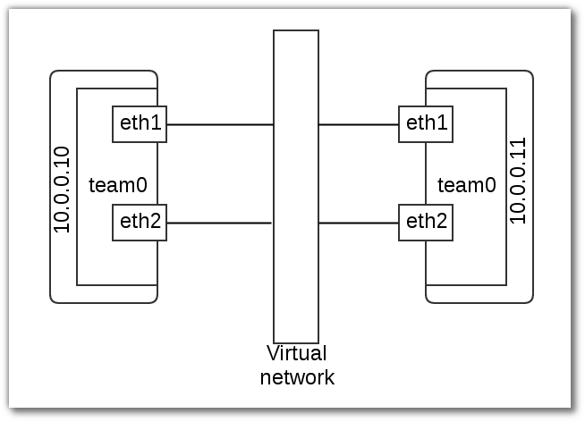

Network Teaming & Bridge¶
Teaming¶
vagrant¶
# -*- mode: ruby -*-
# vi: set ft=ruby :
Vagrant.configure("2") do |config|
config.vm.box = "centos/7"
config.vm.define :server1 do |node|
node.vm.network :private_network, :ip => "10.0.0.10"
node.vm.network :private_network, :ip => "20.0.0.10"
node.vm.provider :libvirt do |domain|
domain.uri = 'qemu+unix:///system'
domain.driver = 'kvm'
domain.host = "server1.example.com"
domain.memory = 2048
domain.cpus = 2
domain.nested = true
domain.volume_cache = 'none'
domain.storage :file, :size => '20G'
domain.storage :file, :size => '20G'
domain.storage :file, :size => '20G'
end
end
config.vm.define :server2 do |node|
node.vm.network :private_network, :ip => "10.0.0.11"
node.vm.network :private_network, :ip => "20.0.0.11"
node.vm.provider :libvirt do |domain|
domain.uri = 'qemu+unix:///system'
domain.driver = 'kvm'
domain.host = "server2.example.com"
domain.memory = 2048
domain.cpus = 2
domain.nested = true
domain.volume_cache = 'none'
end
end
end
vagrant accesss¶
เปิด terminal ใหม่ 2 terminal terminal 1 ใช้ access ไปที่ server1:
vagrant ssh server1
sudo su -
hostnamectl set-hostname server1
hostname
terminal 2 ใช้ access ไปที่ server2:
vagrant ssh server2
sudo su -
hostnamectl set-hostname server1
hostname
Config Team¶
On Server1:
# yum install -y teamd
//check kernel
# modprobe team
# modinfo team
filename: /lib/modules/3.10.0-327.18.2.el7.x86_64/kernel/drivers/net/team/team.ko
alias: rtnl-link-team
description: Ethernet team device driver
author: Jiri Pirko <jpirko@redhat.com>
license: GPL v2
rhelversion: 7.2
srcversion: C59FD6905408120CA7C83CD
depends:
intree: Y
vermagic: 3.10.0-327.18.2.el7.x86_64 SMP mod_unload modversions
signer: CentOS Linux kernel signing key
sig_key: EB:27:91:DE:1A:BE:A5:F9:5A:A5:BC:B8:91:E1:33:2B:ED:29:8E:5E
sig_hashalgo: sha256
config¶
//remove config
# cd /etc/sysconfig/network-scripts/
# rm -rf ifcfg-eth1
# rm -rf ifcfg-eth2
# nmcli con show
NAME UUID TYPE DEVICE
eth1 8a71d519-dd24-4fa3-bec2-61f0278d667b 802-3-ethernet eth1
eth2 7856b66e-bcd9-45f6-8917-40f7e7eb4c27 802-3-ethernet eth2
eth0 49fe963e-b0e5-4604-8745-e319f8c7e162 802-3-ethernet eth0
//delete connection ``eth1`` ``eth2``
# nmcli con del 8a71d519-dd24-4fa3-bec2-61f0278d667b
# nmcli con del 7856b66e-bcd9-45f6-8917-40f7e7eb4c27
# nmcli c s
NAME UUID TYPE DEVICE
eth0 81208c98-cfc3-4a14-9595-0eb2f54a7966 802-3-ethernet eth0
System eth0 5fb06bd0-0bb0-7ffb-45f1-d6edd65f3e03 802-3-ethernet --
Create connection ชนิด team ชื่อ myteam0 พร้อมกับการสร้าง interface ใหม่ ชื่อ team0
//สร้าง team
# nmcli con add type team con-name team0 ifname team0 config '{ "runner": {"name": "loadbalance"}}'
Connection 'myteam0' (bc60cf30-a296-44b5-8157-dceabe7a06c7) successfully added.
//สร้างให้เองอัตโนมัติ
cat /etc/sysconfig/network-scripts/ifcfg-myteam0
DEVICE=team0
TEAM_CONFIG="{ \"runner\": {\"name\": \"loadbalance\"}}"
DEVICETYPE=Team
BOOTPROTO=dhcp
DEFROUTE=yes
PEERDNS=yes
PEERROUTES=yes
IPV4_FAILURE_FATAL=no
IPV6INIT=yes
IPV6_AUTOCONF=yes
IPV6_DEFROUTE=yes
IPV6_PEERDNS=yes
IPV6_PEERROUTES=yes
IPV6_FAILURE_FATAL=no
NAME=team0
UUID=bc60cf30-a296-44b5-8157-dceabe7a06c7
ONBOOT=yes
//กำหนด ip
# nmcli con mod team0 ipv4.addresses 10.0.0.10/24
# nmcli con mod team0 ipv4.gateway 10.0.0.1
# nmcli con mod team0 ipv4.method manual
//เพิ่ม eth1 ให้เป็น team interface ชนิด team-slave ของinterface team0 มีชื่อว่า team0-slave0
# nmcli con add type team-slave con-name team0-slave0 ifname eth1 master team0
Connection 'team0-slave0' (329c1ff0-d674-46aa-9bd5-7af1b60d5327) successfully added.
//เพิ่ม eth2 ให้เป็น team interface ชนิด team-slave ของinterface team0 มีชื่อว่า team0-slave1
# nmcli con add type team-slave con-name team0-slave1 ifname eth2 master team0
Connection 'team0-slave1' (eb9e1180-d8d3-4abe-a88e-42ffe1c8f72b) successfully added.
//โดยที่ nmcli จะสร้าง config ให้แก่ connection ทั้ง team0-slave0 และ team0-slave1
# cat /etc/sysconfig/network-scripts/ifcfg-team0-slave0
NAME=team0-slave0
UUID=329c1ff0-d674-46aa-9bd5-7af1b60d5327
DEVICE=eth1
ONBOOT=yes
TEAM_MASTER=team0
DEVICETYPE=TeamPort
# cat /etc/sysconfig/network-scripts/ifcfg-team0-slave1
NAME=team0-slave1
UUID=eb9e1180-d8d3-4abe-a88e-42ffe1c8f72b
DEVICE=eth2
ONBOOT=yes
TEAM_MASTER=team0
DEVICETYPE=TeamPort
Activate Team¶
# nmcli con up team0
Connection successfully activated (D-Bus active path: /org/freedesktop/NetworkManager/ActiveConnection/3)
# nmcli c s
NAME UUID TYPE DEVICE
eth0 49fe963e-b0e5-4604-8745-e319f8c7e162 802-3-ethernet eth0
team0 3c59a2f2-5cb4-47a7-8593-f0c683d66c28 team team0
team0-slave0 329c1ff0-d674-46aa-9bd5-7af1b60d5327 802-3-ethernet eth1
team0-slave1 eb9e1180-d8d3-4abe-a88e-42ffe1c8f72b 802-3-ethernet eth2
myteam0 bc60cf30-a296-44b5-8157-dceabe7a06c7 team --
System eth0 5fb06bd0-0bb0-7ffb-45f1-d6edd65f3e03 802-3-ethernet --
# teamdctl team0 state
# teamdctl team0 config dump
setup:
runner: loadbalance
ports:
eth2
link watches:
link summary: up
instance[link_watch_0]:
name: ethtool
link: up
down count: 0
eth1
link watches:
link summary: up
instance[link_watch_0]:
name: ethtool
link: up
down count: 0
//check port status
# teamnl team0 ports
4: eth2: up 0Mbit HD
3: eth1: up 0Mbit HD
#nmcli con reload